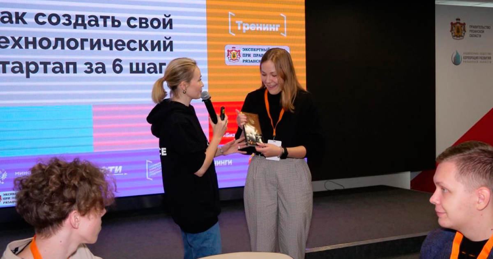
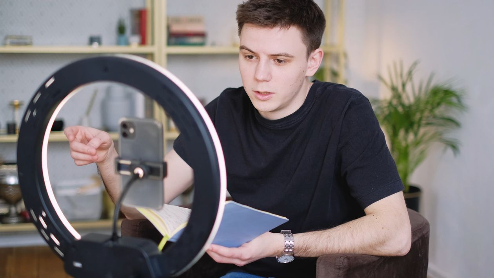
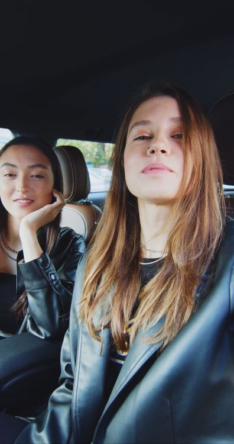

АЛЬФА-БУДУЩЕЕХАКАТОН
Умный кредитный кабинет
ИИ-кабинет, который помогает предпринимателю подобрать и оформить подходящий кредит.
О хакатонеОБО МНЕ · ПРАКТИКА И ОПЫТ
Участвую в проектах и решаю реальные бизнес-задачи. Выступаю в роли Frontend Developer и AI Product Manager.
ИИ-кабинет, который помогает предпринимателю подобрать и оформить подходящий кредит.
О хакатонеЗадачи трека: анализ опыта клиентской поддержки Т-Банка, построение финмодели, внедрение новых принципов и механизмов.
О чемпионатеПомощник выясняет запрос бизнеса, подбирает решение МТС и передаёт менеджеру контекст диалога.
О хакатонеПредпринимательские сообщества, форумы, стажировки и образовательные программы — опыт, который переношу в работу над продуктами.
ПРАКТИКА ВНЕ ПРОЕКТОВ / 2026
Форумы и интенсивы — место, где идеи встречаются с людьми, командами и реальными запросами бизнеса.

Три дня работы с предпринимательскими инструментами: от поиска ценности для клиента до продвижения и роста проекта.
О форуме
Площадка молодых предпринимателей и специалистов: обмен опытом, разговор о проектах и новые связи для дальнейшей работы.
О форуме
Предпринимательский интенсив о промышленности: задачи компаний, работа с идеей и поиск решений, которые можно применить на производстве.
Об интенсивеМои работы
Не просто концепции — понятные сценарии, интерфейсы и работающие прототипы.
01 · Content intelligence
 01
01
02
0302 · Workforce management
03 · Online reservation
Ваш столик
уже ждёт.
Как я работаю
Соединяю продуктовый подход, AI-инструменты и разработку. Могу быстро проверить идею, собрать прототип и показать, как решение будет работать в реальном сценарии.
Есть задача или идея?
Ответьте на несколько вопросов о компании и её процессах. Я найду повторяющиеся задачи и предложу, что можно упростить с помощью цифрового продукта или автоматизации.
Пройти мини-аудит